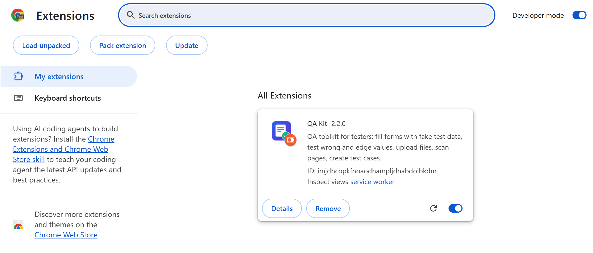
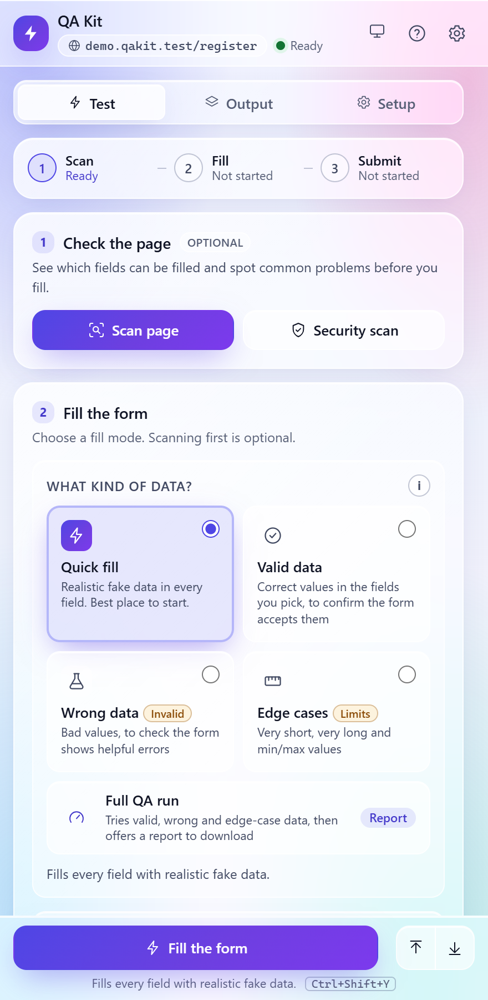

Fill and test any web form in seconds. Install, use, done.
A browser extension for testers. On any web form it fills every field with realistic fake data (names, emails, mobiles, PAN, dates, dropdowns, uploads), tests the form with wrong and extreme values to find missing validations, scans the page for accessibility and security problems, and creates test cases you can export.
Documents\QA Kit.chrome://extensions or edge://extensions.manifest.json.qa-kit-firefox.zip from the owner or the shared folder.about:debugging#/runtime/this-firefox.Firefox removes it when it closes, so load it again after a restart. “Appears to be corrupt” means you used Install Add-on From File: use the steps above instead.

When the owner announces an update: put the new files into the same folder (git pull, or copy the new zip’s contents over it and choose Replace), click ↻ on QA Kit in chrome://extensions, and reload your test pages. Your files and settings stay.
Panel tabs: Test (scan, fill, submit) · Output (results, test cases, reports, logs) · Setup (recording, network, screen sizes, settings). Fields that already have a value are kept.

| Mode | What it does | Use it to |
|---|---|---|
| Quick fill | Realistic fake data in every empty field, including fields that appear later (City after State) | Fill forms fast |
| Valid data | Correct values in required and/or optional fields | Confirm correct input is accepted |
| Wrong data | Tries bad values (wrong email, short mobile, wrong PAN…), then restores the form | Find missing error messages |
| Edge cases | Too short, too long, minimum and maximum values, then restores the form | Check length and number limits |
| Full QA run | Valid + Wrong + Edge cases in one go, then offers an HTML report to download | One complete check with a report |
| Passed | The form refused the bad value. Good. |
| Failed | The form accepted something it should refuse (or refused a correct value). Raise a bug. |
| No error shown yet | The form may only check on Save. Run again with Click Save / Submit after each wrong value on. |
| Check manually | Some forms allow it (e.g. +91 in a mobile). You decide. |
Test tab → Upload fields → Add file: add a few small dummy files (PDF, JPG, PNG), then use Categories to mark each one (Photo, ID proof, Address proof…). QA Kit then puts the right file in each upload box. Files stay in your browser.
| Security scan | Test tab. Quick, safe check for common issues (http forms, risky scripts, exposed tokens, trackers). Score out of 100; Copy report for the bug ticket. |
| Test cases | Output → Generate test cases. Export as CSV, Markdown, HTML, PDF or Playwright code. |
| Record errorsChrome/Edge | Setup → Capture activity during fill. Counts console errors and failed requests (404, 500) while you test. |
| Evidence screenshotChrome/Edge | Output → Reports → Capture page evidence. Full-page picture plus recorded errors, ready for a bug. |
| NetworkChrome/Edge | Setup → Network → choose 3G, Slow 2G or Offline → Apply. Check loading signs, double Submit and error messages. Restore normal when done. |
| ViewportChrome/Edge | Setup → Viewport → pick a phone, tablet or laptop. Preview shows a picture and flags sideways scrolling; Apply to current page lets you use the page at that size. Restore viewport when done. |
Network, Viewport and the evidence screenshot make Chrome show “QA Kit started debugging this browser”. That is normal; it goes away when you restore.
| Ctrl+Shift+Y | Open QA Kit |
| Alt+S / Alt+F | Scan / Fill |
| Alt+T / Alt+B | Page top / bottom |
| Alt+1 2 3 | Test / Output / Setup |
| ? / Esc | Help / close |
Works: normal sites and web apps (React, Angular, Vue), most custom dropdowns, date pickers and upload boxes, same-site frames.
Doesn’t: browser pages (chrome://, Web Store), frames from another website, canvas-drawn forms, CAPTCHAs.
| “Can’t read this page” | Reload the tab and try again. |
| A field was skipped | Probably a custom widget. Fill it by hand; the reason is in Output → Activity log. |
| An upload box stayed empty | Add a file in a format the box accepts (see its “PDF, JPG…” hint). |
| Files and settings disappeared | You loaded QA Kit from a new folder. Remove it and use the original folder. |
| No Developer mode / Load unpacked | Your company manages the browser. Ask IT. |
Report a problem to the owner with: the page address, what you expected, and the text from Output → Activity log → View logs.